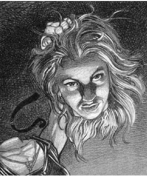

2139
| Climate/Terrain: | Barovia |
|---|---|
| Frequency: | Unique |
| Organization: | Solitary |
| Activity Cycle: | Day |
| Diet: | Omnivore |
| Intelligence: | Varies |
| Treasure: | (F) |
| Alignment: | Neutral evil |
| No. Appearing: | 1 |
| Armor Class: | 10 |
| Movement: | 12 |
| Hit Dice: | 5 (20 hp) |
| THAC0: | 15 (12) or better |
| No. of Attacks: | 1 |
| Damage/Attack: | 4-11 (1d8+3) |
| Special Attacks: | Decapitation |
| Special Defenses: | Regeneration |
| Magic Resistance: | 50% |
| Size: | M (5’10” tall) |
| Morale: | Fanatic (19) |
| XP Value: | Varies (2,000+) |
The quest for eternal youth has driven many to deeds of great heroism and terrible despair. For some, it is a noble calling that leads to the discovery of great medical advances. For others, it is an obsession that leads to the most heinous of crimes. In the case of Jacqueline Montarry, it has become the basis for a series of crimes as horrible and bizarre as any in Ravenloft’s whole sordid history.
Jacqueline maintains a collection of some three dozen severed heads. She is able to remove the head she is currently wearing and replace it with one from her collection at will. Because she changes heads with every shift in her moods, her facial features are constantly changing. She no longer has her own original head, so her true appearance is long forgotten.
Jacqueline changes her clothes as frequently as she changes heads. Her vanity dictates that she wear only the finest garments, always chosen to compliment the head she is currently wearing. The only consistent feature in her attire is a ribbon of crimson velvet that she wears around her neck. Because this magical item secures her various heads to her body, she is never without it. In cases where it clashes with her clothing or chosen head, she will cover it with a scarf or other some item of jewelry for cosmetic reasons.
Jacqueline’s native language is Balok, the Common Tongue of Barovia. Each of her heads knows one or more other languages, making it easy for her to communicate with almost any visitor.
Combat: Jacqueline’s favored weapon is Ironfang, her vorpal sword. Ironfang was fashioned ages past from meteoric iron by the Arak, from whom she stole it long ago. She is able to use this weapon even when wearing the head of a wizard or other character class which might normally be unable to employ such a sword. This weapon functions in all ways as described in the Dungeon Master Guide. Jacqueline has made it a practice to “harvest” new heads only with this blade.
This is not to say that she has no other weapons at her disposal. Indeed, whenever she dons a new head, she gains the class and level abilities formerly associated with it. Thus, if she opts to wear the head of a psionicist, she would gain its mental powers. In the case of spell casters, she cannot master new spells but can cast any known to the wizard or priest from whom she took the head. In each case, the spells are assumed to be freshly memorized each time she puts on the head.
The curse of eternal life under which Jacqueline lives has given her many special abilities. For instance, she regenerates lost hit points at a rate of 1 per turn, even after death. The only way in which she can be wholly destroyed is by the incineration of her original head. Because no one, not even Jacqueline herself, knows where it is hidden, she seems in little danger at present.
In addition to her regenerative powers, she is immune to any manner of poison, disease, or magically-induced paralysis. Thus, spells such as cause disease, hold, or sleep have no effect upon her. Spells and items that affect the mind, like a charm spell, affect her normally. Jacqueline is not undead, so attempts to turn her or the use of spells designed to combat such horrors have no effect upon her. These immunities are in addition to the 50% magic resistance which the magical energies with which she has been infused give her.
Whenever Jacqueline is called upon to make a saving throw, she does so as the class and level of the head she is currently wearing. Thus, when wearing the head of a 10th-level fighter she saves as a 10th-level fighter.
It takes Jacqueline a full round to change heads. So long as she wears her crimson ribbon, the head remains fully attached to her body — that is, it cannot be pulled or knocked off. If the ribbon is removed (it is impervious to all damage and cannot be destroyed) the head instantly rolls off and Jacqueline loses access to its powers.
Even without a head in place, Jacqueline’s body is able to move and act normally; the curse she suffers enables her to see and hear (but not speak) when headless.
Habitat/Society: Jacqueline was born in the domain of Barovia some 200 years ago. She grew up in the village of Krezk, learning the craft of thieving from her parents, both of whom were master thieves, but she soon surpassed her teachers. By the time she was 16 years old, she had become one of the most skilled rogues in the domain — and one of its most beautiful women.
Like so many others of Barovian blood, Jacqueline found her beauty began to fade slightly as she entered her late twenties. Tiny lines began to appear around her eyes, and the first few white hairs showed in her raven tresses. To Jacqueline, who had been so proud of her beauty and the power it gave her over men, this change was unbearable.
In an effort to find some means of preserving her beauty, Jacqueline travelled to the Vistani compound on the banks of the River Ivlis. She sought out Madame Eva, the matriarch of Barovia’s Vistani population, and begged for some means to remain eternally young and beautiful. When the old Vistani refused, Jacqueline offered to buy the secret from her, promising to steal anything that the other might need. Again, Madame Eva refused, telling Jacqueline that the secrets of the Vistani were not for sale.
This enraged the desperate thief. In a flash, she grabbed the elderly Vistani and held a knife to her throat. As a thin trickle of blood ran from Madame Eva’s neck, Jacqueline demanded her help. Calmly, Madame Eva told her there was a way to ensure her beauty would never fade, but she would be wiser not to seek it. When Jacqueline insisted, the old woman said that she would find what she wanted waiting for her in the library of Castle Ravenloft.
Relief flooded through the thief from Krezk at the thought that the object of her desire was within reach. The fact that she would have to sneak into the castle of Barovia’s sinister lord to gain it meant nothing to her. In order to ensure that the old woman would do nothing to betray her, Jacqueline drew the blade across Madame Eva’s throat. Leaving the body behind, she slipped her knife back into its sheath and vanished into the deep Barovian night. Had she bothered to look behind her, she might have noticed an evil grin on the dying woman’s face,
Jacqueline wasted no time in making her way to the ominous Castle Ravenloft. Not fully comprehending the terrors that dwelt within the great stone structure, she scaled the outer walls and crossed the parapets, entering the keep itself through the belfry. As she explored the darkened halls of the great castle and searched for the library, she failed to notice the silent shadow that haunted her steps.
At last, the thief found what she was looking for. Cautiously, she slipped into the library and began to examine the tomes and manuals that lined the walls of the great room. But as she reached out her hand to take a book from the shelves, she froze at the sound of evil laughter behind her.
Whirling, she found herself face to face with Strahd Von Zarovich. Panic-strickened, she turned and dashed for an exit, but the vampire was upon her before she had gone more than a few feet. Screaming in horror, she felt her life being drained away to satisfy the hunger of the foul master of Ravenloft. As the numbing cold of his touch spread throughout her body, blackness folded itself around her and Jacqueline lost consciousness.
When her eyes opened, she found herself in a great cage which was rocking back and forth. As her senses gradually returned, she realized that she was weak and fatigued, but that the vampire had left her alive. The cage around her proved to be mounted on a wagon which was heading down the narrow road from Castle Ravenloft to the village of Barovia.
The wagon came to a halt in the center of the town. A tally dark man dropped down from the driver’s seat and sounded a loud, mournful call on an iron horn. As the people of the village gathered around, the driver brandished a scroll. “Let it be known,” he read, “that this woman was found trespassing in the halls of Castle Ravenloft. By the order of Strahd Von Zarovich, master of Barovia, she is to be put to death. Let others who might be foolish enough to consider such a course of action take heed of her fate.”
With that, the man opened the cage and dragged Jacqueline out. She struggled to break free but was far too weak from the vampire’s life-draining attack to offer any effective resistance. Sobbing and begging for mercy, she was forced to her knees and her head forced down onto a wooden block. As the people of Barovia watched, a great axe was brought forward and Jacqueline Montarri was beheaded.
As the silent crowds began to disperse, a representative of the Vistani stepped forward. She told the tale of Madame Eva’s death and asked that the body of the thief be turned over to the murdered woman’s kin. On behalf of Strahd, the driver agreed, and the Vistani carried away the mutilated corpse.
For several days, the Vistani wove intricate magics over the corpse. Then, one week after she died, Jacqueline was restored to life.
When awareness returned to her, Jacqueline found that she was locked in the back of a great Vistani wagon. The clothes she had died in, the leather tunic and dark cotton pants that she favored when on a thieving expedition, were gone. Now, she was dressed in the wild colors and ruffles of a Vistani woman. Her hair had been drawn back and tied with a red cords a wide band of crimson velvet encircled her neck, and the heavy odor of exotic perfumes hung thickly about her.
To her horror, Jacqueline realized that these were the same clothes Madame Eva had worn when Jacqueline killed her. There was no sign of blood upon them, but the patterns and decorations sewn on them were unmistakable.
Her mind hazy, Jacqueline tried to recall the events that had brought her to this place. She remembered her meeting with Madame Eva and her attempt to burgle Castle Ravenloft. With a shudder, she recalled her capture by Strahd Von Zarovich and the chilling touch of the vampire. Then, as a wave of cold fear swept through her, she remembered the events that followed. She saw the carriage, the executioner, and the townsfolk of Barovia. She even remembered the falling axe and the burning darkness that followed it.
Jacqueline knew that she must be dead. There was no way for her to have survived the beheading. Somehow, the Vistani must have restored her to life — but was it life? Terrified, she considered the possibility that she might now be among the ranks of the foul undead. A quick check revealed both pulse and respiration to be normal, so she tried to set aside fears that she might no longer be truly alive.
Certain that whatever fate the Vistani had in mind for her would be terrible, she decided to escape, drawing on her experience as a thief to ease open the wagon’s door and slip quietly out into the night.
To her surprise, she was quite alone. There was no sign of the reception committee that she had expected to find outside the carriage. Instead, a broad clearing spread out around her. The Vistani had been here — that much was obvious from the burned-out campfire and such — but they were long gone.
Relieved, and more than a little confused, Jacqueline left the clearing behind in the event that the Vistani might return. She quickly came across the Old Svalich Road and discovered that she was not far from her home. With a lighter heart, she quickened her pace and made for Krezk.
The streets of Krezk were all but empty, and Jacqueline made her way to the front door of her home without difficulty. She slipped inside and bolted the door behind her.
Trying to forget the nightmares of the past several days, she stoked a fire and set about heating some washing water. She decided to take one last look at the outlandish Vistani dress she wore before removing the thing and burning it in the fire. She stepped in front of a silvered glass and let out a scream of terror that some say can still be heard in the back alleys of Krezk.
In the mirror, she saw the lithe figure that she was accustomed to. Her long, slender arms and legs, as fit and smoothly muscled as those of any athlete, were flatteringly accented by the gypsy costume she wore. Her face, however, was shrivelled and old. Indeed, the head upon her body was none other than that of Madame Eva.
Disgusted, Jacqueline tore off the bright clothes, ripping buttons and hiiks in her haste. She pulled the cord from her hair, and found that the rolling tresses she was used to had been replaced with the wiry grey of old age. It was only when she pulled the ribbon from her neck that the true enormity of the Vistani punishment was revealed. As soon as the crimson band fell away from her neck, the room seemed to tilt wildly around her. She had the sensation of falling and tried in vain to catch herself. When she could focus again, she saw her new head seeming to grin up at her from the floor, while above her neck she could feel nothing at all.
It is a tribute to the iron will of Jaqueline Montarri that she did not lose her sanity then and there. Instead, she tried to calm herself and learn to understand the curse that was upon her. For instance, she found that she could control her body normally even without a head. When she lifted the shrivelled head of the old Vistani and placed it upon her neck, it fell to the floor again. Only when she placed the head on her neck and bound in with the velvet ribbon did it remain secure.
When Jacqueline had at least come to accept what had happened to her, she vowed to undo the curse. She sought out the Vistani camp again and demanded to know what they had done to her. From most, her only answer was laughter and mocking.
One old woman, who claimed to be Madame Eva’s daughter, deigned to speak with her. She was bitter, as one might well expect, and seemed delighted with the agony burning in Jacqueline’s soul. She told the thief that her only chance to be free of the curse was to find her own head and restore it to its place. If this was done, she explained, the girl’s desire for eternal youth and beauty would be granted. When Jacqueline demanded to know where her head was, the old woman only laughed and walked away. Despite the centuries that have passed since that encounter, Jacqueline has never been able to locate her original head.
In the long years that have passed since that day, Jacqueline has learned a great many things about her curse and its subtle ramifications. The most important of these, perhaps, is that she can wear the severed heads of others as well as that of Madame Eva. Indeed, she has found that she begins to develop terrible headaches if she wears any single head for more than three days in a row. Because of this, she has accumulated a great library of heads collected in a series of brutal murders over a period of many decades.
Whenever she wears a head, she gains the class and abilities associated with it prior to beheading. Thus, if she were to don the head of a 10th-level wizard, she would gain the spellcasting ability of such a character. The variety of heads she owns gives her a great assortment of skills and abilities.
Most of Jacqueline’s heads are chosen not for their special abilities, but for their physical attractiveness. The same vanity that lead her to challenge Castle Ravenloft has caused her to assemble a collection of the most beautiful heads one could imagine. She spends countless hours making them up, changing their hair style, and primping them.
Jacqueline has experimented with her special ability over the centuries. She has discovered that she cannot wear the heads of anything but human females. Males, and females of other races (like elves and even halfelves), are of no use to her. She prefers to claim new heads with her vorpal sword (due to the neatness of its cut), but this is by no means a requirement of her curse.
Ecology: Every day that Jacqueline spends wearing a given head ages it one year. When the head is not on her neck, it does not age. This rapid aging causes even the most beautiful head to quickly waste away. Because Jacqueline’s vanity demands that she wear only the most beautiful heads, she is constantly seeking to replace her old heads with new ones.
Rather than destroying the heads that she no longer uses, Jacqueline simply tosses them into a great basement beneath her lavish home in Krezk. Because these heads do not die and remain fully aware, this chamber has become a pit of suffering as black as any found in the Abyss. Ideals discarded here are kept in glass cases and stacked in row upon row as if they were crates in a great warehouse. The room is filled with an endless cacophony of screams, moans, and sobs as madness gradually claims the minds of those trapped here. Persons entering this foul area and gazing on the hundreds of eternally living and tormented heads must make a fear check at the very least. Spotting a friend’s head among the heads is call for a horror check.
Neither Jacqueline nor her many heads has any need to eat or drink. Jacqueline herself still does so in the company of others, however, as this helps to maintain the illusion that she is a normal woman.
◆ 1008 ◆